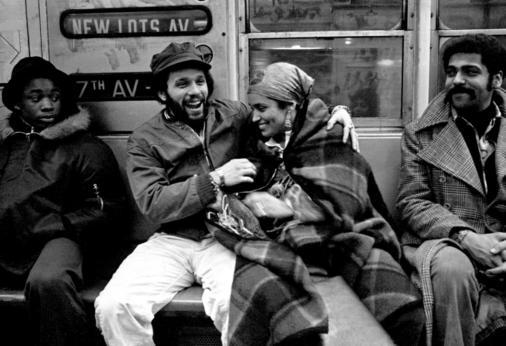

Bolivar Arellano Nuyorican Poets Miguel Piñero and Sandra Maria Esteves on the Subway, New York City 1977
Juan: Someday I’m gonna be walking down the streets minding my own business and BAM! I’m gonna be shot by some pig, who’s gonna swear that it was a mistake. I accept that as a part of my destiny.
– Miguel Piñero, “Short Eyes” 1974